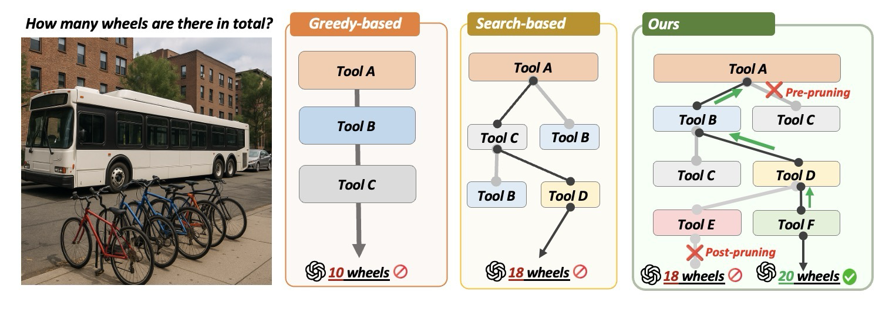
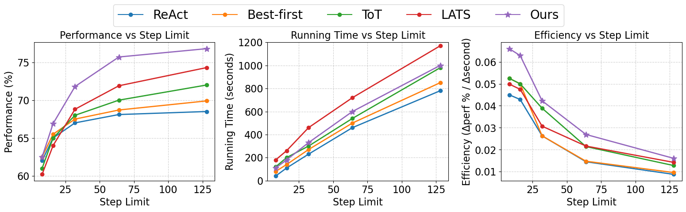
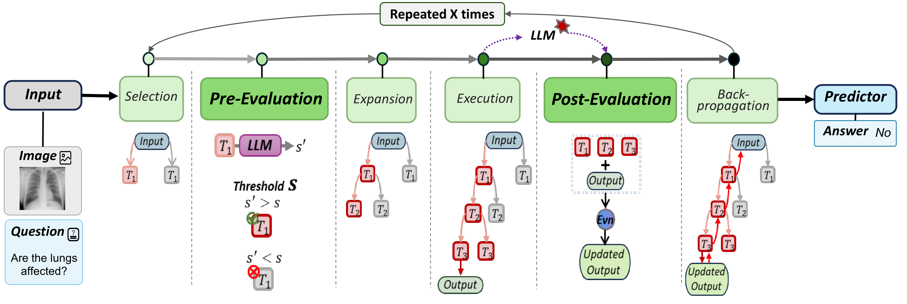
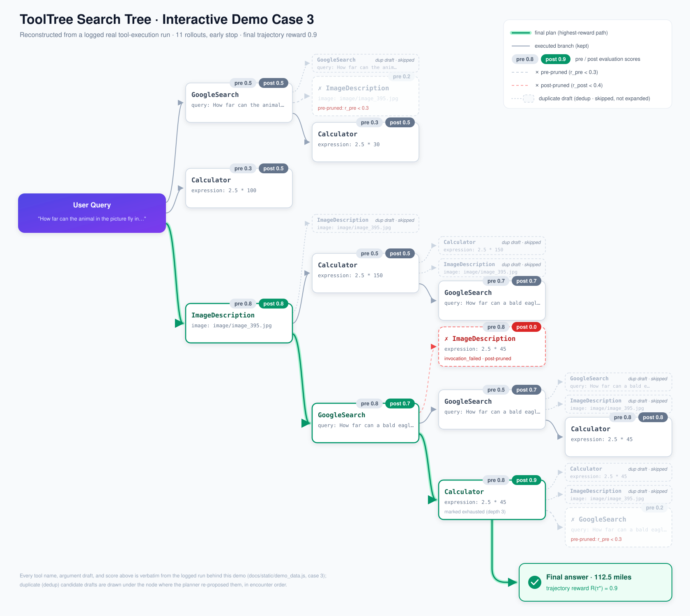
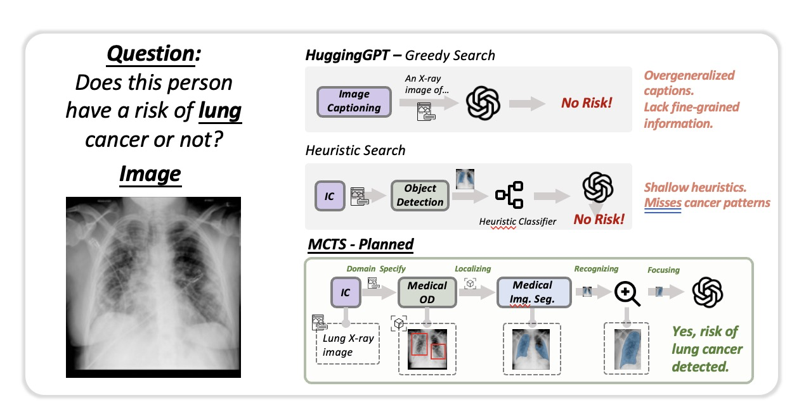
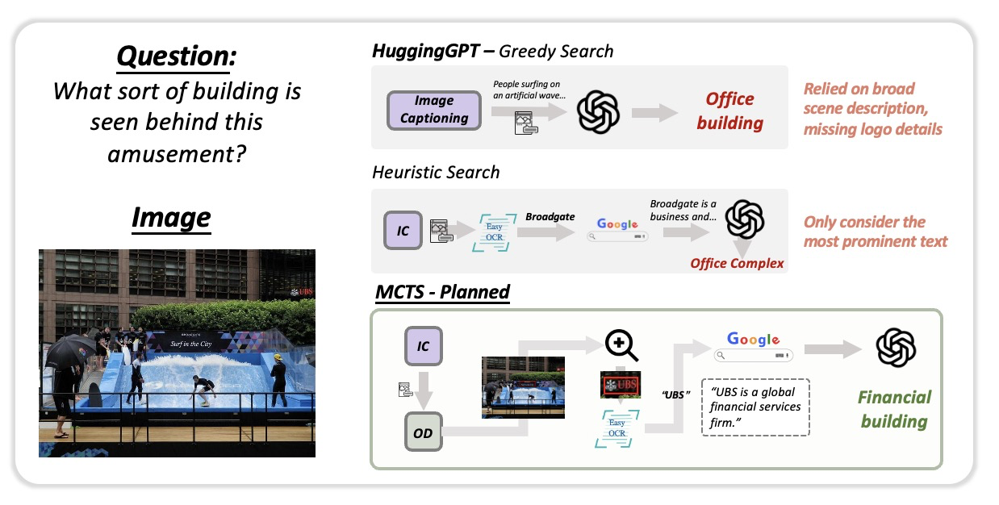
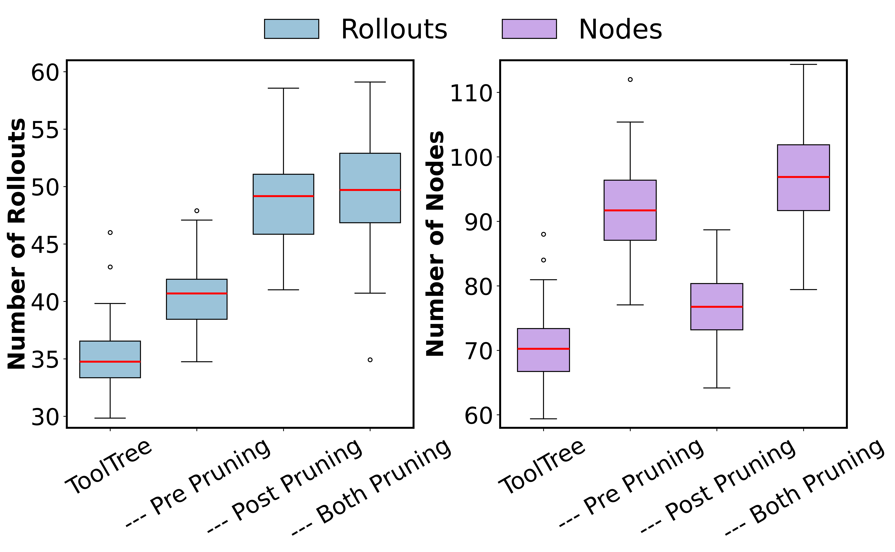

Overview
ToolTree is a novel Monte Carlo tree search-inspired planning paradigm for LLM agent tool planning. It explores possible tool usage trajectories using a dual-stage LLM evaluation and bidirectional pruning mechanism that enables the agent to make informed, adaptive decisions over extended tool-use sequences while pruning less promising branches before and after the tool execution.

Efficiency

Method


Pre-Evaluation
A fast predictive signal that estimates the utility of a tool before execution, filtering schema- or slot-incompatible calls before expansion.
Post-Evaluation
Assesses the actual contribution of a tool after execution based on observed outcomes, pruning unproductive branches using real feedback.
Bidirectional Pruning
Combines pre- and post-evaluation to eliminate unpromising branches, concentrating computational budget on promising tool chains.
Answer Predictor
Incorporates the tool trajectories with the highest reward found by the MCTS to produce the final prediction.
Case Study
Qualitative case studies from the paper

Results
ToolTree achieves state-of-the-art performance across 4 benchmarks spanning both closed-set and open-set tool planning scenarios, with an average gain of ~10% over existing methods.
| Benchmark | Setting | Tasks & Tools | Official source |
|---|---|---|---|
| GTA | Closed-set | 229 real-world tasks, 14 executable tools | open-compass/GTA · HF dataset |
| m&m | Closed-set | 882 human-verified multi-step multimodal tasks, 33 tools | RAIVNLab/mnms · HF dataset |
| ToolBench | Open-set | 16,464 real-world REST APIs (RapidAPI) | OpenBMB/ToolBench |
| RestBench | Open-set | TMDB & Spotify REST scenarios | Yifan-Song793/RestGPT |
This repository ships no benchmark data; each benchmark is downloaded from its official source.
Pruning Ablation

Disabling pre-pruning, post-pruning, or both consistently increases the number of rollouts and expanded nodes, confirming that bidirectional pruning concentrates the computational budget on promising tool chains.
BibTeX
@inproceedings{yang2026tooltree,
title={ToolTree: Efficient {LLM} Tool Planning via Dual-Feedback Monte Carlo Tree Search and Bidirectional Pruning},
author={Shuo Yang and Caren Han and Yihao Ding and Shuhe Wang and Eduard Hovy},
booktitle={The Fourteenth International Conference on Learning Representations},
year={2026},
url={https://openreview.net/forum?id=Ef5O9gNNLE}
}